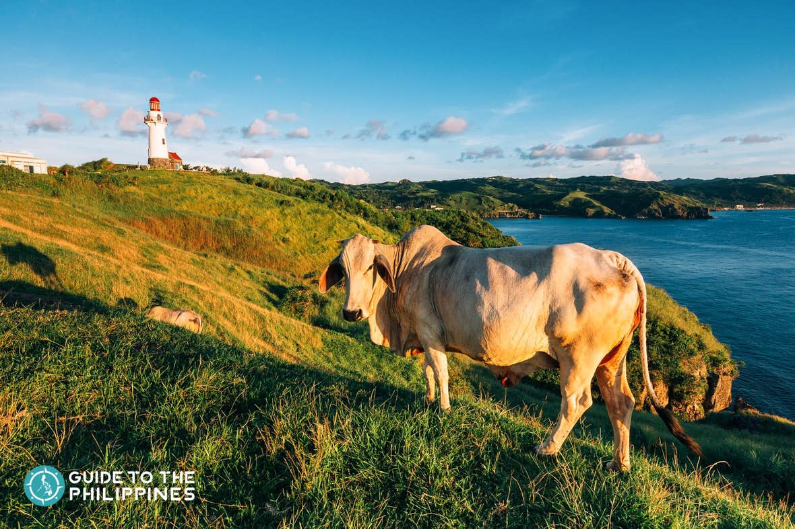
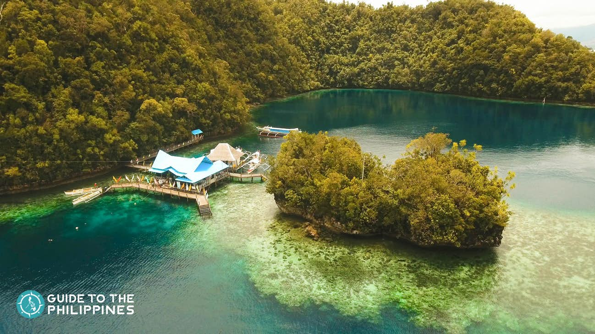
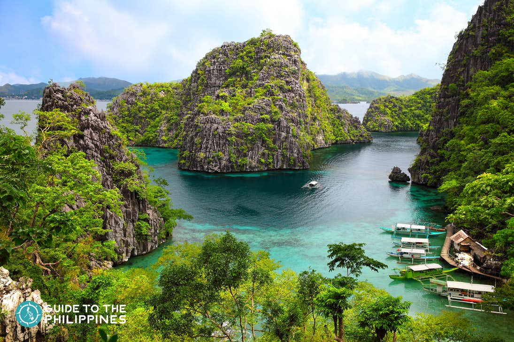

The endless view of the ocean and the peaceful and laid back vibe continuously intrigue and inspire travelers to explore one of the top destinations in the Philippines called Batanes.
Batanes, known as the “Home of the Winds,” because of its calm and windy weather, has preserved its postcard-perfect scenery, friendly culture, and the simple way of living due to its distance from the mainland Luzon and the rest of the country.

This island province is well-known for its charming, centuries-old stone houses, quiet stretches of white sandy beaches, rugged mountains, and never-ending lush green hills.
Its vast distance from the Philippine capital, Manila, used to make Batanes inaccessible to tourists. But with its growing reputation as one of the must-see destinations in the Philippines, traveling to Batanes is now made more accessible.

-
TOP 20 BATANES TOURIST SPOT
- Discover Morong Beach
- Hike to Mount Iraya
- Visit Basco Lighthouse
- See the Vayang Rolling Hills
- Stroll in Valugan Boulder Beach
- Pray at Mount Carmel Chapel or Tukon Church
- Discover Sabtang Lighthouse
- Check Out Tayid Lighthouse
- Visit HOuse of Dakay
- Explore Naidi Hills
- Take a Snapchat of Rakuh A Payaman
- See a Panoramic View of Batanes at Chawa View Deck
- Go on a Food Trip
- Visit the Honesty Coffee Shop
- See Dipnaysupuan Japanese Tunnel
- Get to Know Locals at Diura Fishing Village
- Go to Chamantad-Tinyan Viewpoint
- Check Out Savidug Stone Houses
- Pray at Ivana Church
- Discover Songsong Ruins
Surrounded by crystal clear turquoise waters and covered in coconut palm trees, Siargao is no doubt a dream tropical destination for both local and international travelers.
Known as the "Surfing Capital of the Philippines", the island boasts some of the most influential surf breaks in the world. Its reliable surfing conditions all year round offers something for all skill levels.

It might have turned to one of the most visited spots in the Philippines, but Siargao hasn't lost its laidback island vibe. The warm and friendly locals inhabiting the island are on a mission to preserve the magic of Siargao's natural beauty.
It has pristine white beaches and islands, breathtaking lagoons, and lush green coconut trees lined up on the roads. These are some of the reasons why you must add Siargao tours to your bucket list.

-
TOP 18 SIARGAO TOURIST SPOT
- Surf Cloud 9’s World Famous Waves
- Get a Tan on Naked Island
- Take the Leap at Sugba Lagoon
- Explore the Enchanting Sohoton Cove National Park
- Swim in the Magpupungko Rock Pools
- Taste the Best Barbecue at Mama’s Grill
- Discover the Charm of Guyam Island
- Enjoy a Tropical Feast at Daku Island
- Try Shaka Café’s Smoothie Bowls
- Chase the Waves in Pacifico Beach
- Explore Corregidor Island
- Go Canyoneering in Tayangban Cave Pool
- Swim in Alegria Beach
- Chill in the Cool Waters of Taktak Falls
- Learn How to Surf in Secret Beach
- Dive in the Blue Cathedral
- Swing in Maasin’s Bent Coconut Tree Rope
- Drive Along to Siargao’s Palm-lined Road
If you're planning to visit the island soon, remember that Siargao is more than just a place for island-hopping excursions. It's more than just a tourist destination. People who live here – locals and foreigners alike are living their life stories in this paradise.
Named as the Philippines' last ecological frontier, Palawan is one of the country's wealthiest provinces in terms of biodiversity. Its lined with sugary beaches, cays, and towering limestone formations that are unlike any other.
Swiftlets - colloquially known as balinsasayaw - whose nests are prized delicacies, have made these formations their home.

Dense forests comprise a sizable majority of this island province too, serving as habitat for many endemic species, including pitcher plants, mouse deers, pangolins, and born swine.
Suffice to say that Palawan tours are unmatched in Asia, and wherever you go, you won't run out of things to do. Especially if you plan to visit its significant provinces, namely El Nido, Puerto Princesa, Coron, and San Vicente. Here are some for starters:

-
TOP 20 PALAWAN TOURIST SPOT
- Set Sail in Palawan’s Underground River
- Take a Dip in Kayangan Lake
- Swim in Barracuda Lake
- Lounge in Nacpan Beach
- Swim in Big Lagoon
- Marvel at the Small Lagoon
- Discover Port Barton
- Go Island-Hopping in Honda Bay
- Kayak in the Twin Lagoon
- Unwind in Seven Commandos Beach
- Try Wreck Diving in Palawan
- Unwind in Long Beach
- Trek to Mt. Tapyas
- Discover Secret Lagoon
- Visit Snake Island
- Enjoy a Day at Calauit Safari Park
- Explore Shimizu Island
- Learn the Story Behind Siete Pecados
- Try Iwahig Firefly Watching
- Immerse in a Historical Tour in Culion
Whether you're looking for outdoor adventures, eco-tours, or beach tours, you'll surely find the best adventure for you and your group!